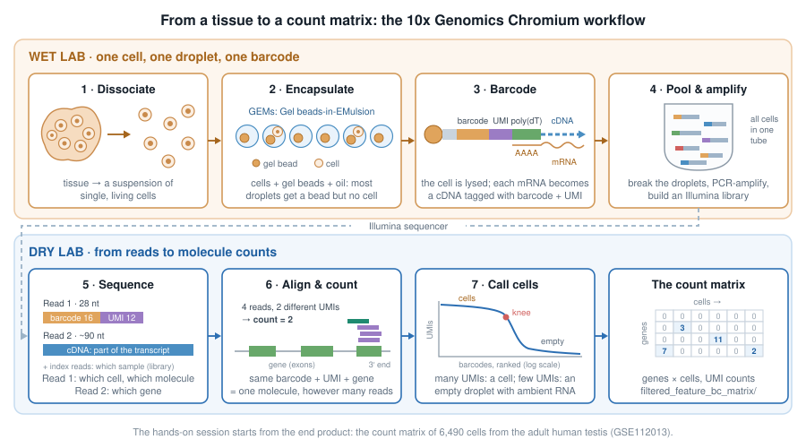
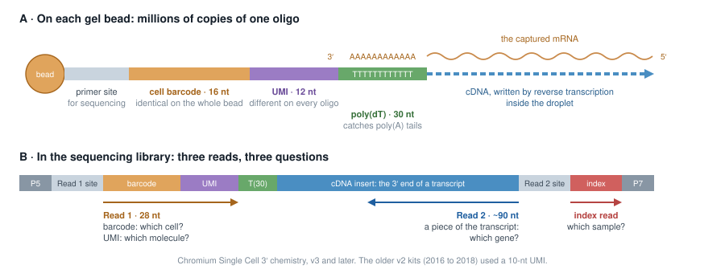
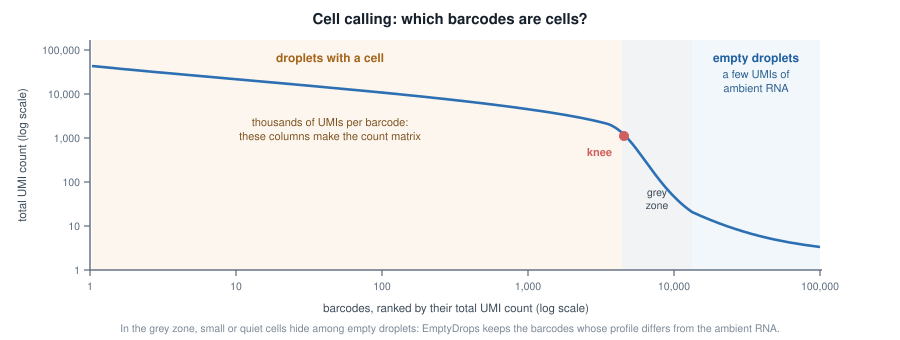
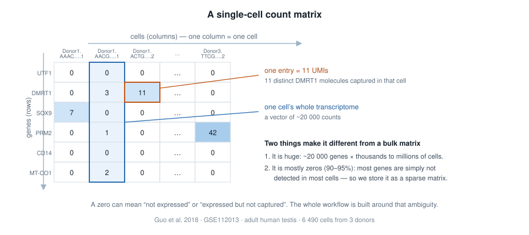
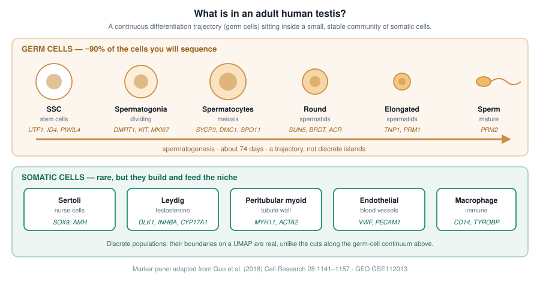

1 From cells to counts: the 10x Genomics workflow
It takes about 15 minutes and needs no R. The hands-on session starts where this chapter ends: with a count matrix.
Bulk RNA-seq measures the average transcriptome of thousands to millions of cells. That average hides what single-cell RNA-seq (scRNA-seq) is designed to reveal: which cell types a tissue contains, in which proportions, which states they go through, and which genes define each of them. A bulk profile of a testis mixes stem cells, dividing spermatogonia, meiotic spermatocytes, spermatids and a handful of somatic cell types into a single vector of numbers; the dataset of the hands-on session separates them again, cell by cell.
Many scRNA-seq technologies exist. The most widely used today isolates cells in droplets, and its most common implementation is the Chromium platform of 10x Genomics (Zheng et al. 2017). This chapter follows a sample through that workflow, from a piece of tissue to the object every analysis starts from: a count matrix of genes × cells (Figure 1.1).

1.1 A suspension of single, living cells
Everything starts with dissociation: the tissue is digested, enzymatically and mechanically, into a suspension of single cells, which is then filtered, counted and checked for viability. That step shapes the data more than any later one:
- cells that do not survive the digestion, or are too large, too fragile or too sticky, end up under-represented or missing;
- stressed cells switch on immediate-early genes (FOS, JUN, heat-shock genes…): a well-known dissociation signature;
- dying cells leak their cytoplasmic mRNA through a damaged membrane. You will recognise them in the quality control of the hands-on session, by their high fraction of mitochondrial transcripts.
When a tissue cannot be dissociated (frozen archives, neurons, adipocytes…), nuclei are isolated instead, and the experiment becomes single-nucleus RNA-seq (snRNA-seq). The rest of the workflow is the same.
1.2 One cell, one droplet, one barcode
The cell suspension is loaded on a microfluidic chip together with gel beads and oil. Where the channels meet, the oil cuts the aqueous flow into tiny droplets, each carrying one gel bead: the GEMs (Gel beads-in-EMulsion).
Cells are loaded at a low concentration, so that a droplet rarely receives more than one. The price is that most droplets contain a bead but no cell, and that a few receive two cells or more: a doublet, which will look like a single cell with a hybrid profile. The doublet rate grows with the number of cells loaded: with the Chromium 3’ chemistry it is roughly 0.8% per 1,000 cells recovered, so about 8% in a 10,000-cell experiment.
1.2.1 What is on a gel bead?
Each bead carries millions of copies of a DNA oligonucleotide made of four parts (Figure 1.2 A):
| Part | Same on… | Tells you |
|---|---|---|
| primer site | every oligo of every bead | where sequencing starts |
| cell barcode (16 nt) | all the oligos of one bead | which droplet, hence which cell |
| UMI (Unique Molecular Identifier, 12 nt) | nothing: random on each oligo | which molecule |
| poly(dT) (30 nt) | every oligo | nothing: it catches the poly(A) tail of mRNAs |
The beads are made from millions of possible barcodes, so two beads of the same experiment almost never share one.

1.2.2 Inside the droplet
In each GEM, the gel bead dissolves and releases its oligos, the cell is lysed, and its polyadenylated mRNAs hybridise to the poly(dT). A reverse transcriptase copies each captured mRNA into a cDNA that starts with the oligo: every cDNA now carries the barcode of its droplet and a UMI of its own. The enzyme also adds a few bases at the end of the cDNA, onto which a template-switch oligo binds, so that all cDNAs end up with known sequences at both ends and can be amplified together with a single pair of primers.
This is the whole trick of droplet scRNA-seq: from then on, molecules from all cells can be mixed in one tube, because each one carries the address of its cell.
The capture is far from complete: only a fraction of the mRNA molecules of each cell is caught and copied. This is where the many zeros of the count matrix come from.
1.3 Pool, amplify, build a library
The emulsion is then broken, and the barcoded cDNAs of all cells are pooled. They are amplified by PCR, fragmented, and fitted with Illumina adapters and a sample index, which lets several libraries share a sequencing run. Only the fragments that contain the 3’ end of a transcript keep the barcode and the UMI (Figure 1.2 B): the library tells you which transcripts a cell contained, and how many, not their full-length sequence. Other kits read the 5’ end instead, mostly to profile immune receptors.
PCR copies some molecules more than others. This is exactly what UMIs are for: all the copies of one original molecule share the same barcode, the same UMI and the same gene, so they can be collapsed back into a single count.
1.4 Three reads, three questions
The library is sequenced on an Illumina instrument, and each fragment gives (Figure 1.2 B):
- Read 1 (28 nt): the barcode and the UMI. Which cell? Which molecule?
- Read 2 (typically 90 nt): a piece of the transcript. Which gene?
- the index read(s): the sample index. Which sample?
A common target is 20,000 to 50,000 read pairs per cell.
1.5 From reads to counts
10x Genomics’ software, Cell Ranger (cellranger count), turns the sequencing reads (FASTQ files) into a count matrix in four steps:
- Barcodes. Each barcode read is checked against the list of barcodes present on the beads, and corrected when a single base is off.
- Alignment. Read 2 is aligned to the reference genome and assigned to a gene when it falls in its exons or, by default since Cell Ranger 7, its introns.
- UMI counting. Reads with the same barcode, the same UMI and the same gene are copies of one molecule: they count once. A number in the matrix is a number of molecules, not of reads.
- Cell calling. Barcodes are ranked by their total number of UMIs (Figure 1.3). Droplets with a cell have many; empty droplets, much more numerous, have a few, coming from the ambient RNA that floats in the suspension (often released by damaged cells). Cell Ranger keeps the barcodes above the “knee” of that curve, then rescues lower-count barcodes whose profile differs from the ambient one, an approach called EmptyDrops (Lun et al. 2019).

Other tools do the same job, often faster: STARsolo, alevin-fry, kallisto | bustools.
Among other things, Cell Ranger writes:
web_summary.html, a quality report (number of cells, reads per cell, median genes per cell…): always the first file to open;raw_feature_bc_matrix/, the counts of all barcodes, empty droplets included;filtered_feature_bc_matrix/, the counts of the barcodes called as cells.
Each matrix is stored in a sparse format of three files:
filtered_feature_bc_matrix/
├── barcodes.tsv.gz # one line per cell (columns)
├── features.tsv.gz # one line per gene (rows): Ensembl ID, symbol
└── matrix.mtx.gz # only the non-zero entries: row, column, countwhich the DropletUtils package reads straight into a SingleCellExperiment, the object of the hands-on session:
library(DropletUtils)
sce <- read10xCounts("path/to/filtered_feature_bc_matrix")1.6 The count matrix

Three ideas to carry into the hands-on session:
- A column is one cell. Its ~20,000 numbers are that cell’s transcriptome, as far as it was captured.
- An entry is a UMI count: the number of distinct molecules of that gene captured in that cell. Not reads: molecules. That is why the numbers are small.
- Most entries are zero, and a zero is ambiguous: the gene may be off, or on but missed by a capture that only catches a fraction of the mRNAs of a cell. Almost every step of the analysis is designed around that ambiguity.
Cell calling does not make every column a good cell either: some barcodes are empty droplets that passed the threshold, some are damaged or dying cells, some are doublets. Finding them is the first job of the hands-on session.
Sequencing-based spatial methods, such as 10x Visium, reuse the barcode + UMI logic. Instead of a bead per droplet, a glass slide carries spots of oligos with a spatial barcode: the barcode no longer tells which cell a molecule came from, but where in the tissue section it was captured. The result is again a count matrix, of genes × spots.
1.7 The dataset of the hands-on session
We will analyse the adult human testis atlas of Guo et al. (2018): testicular tissue from three healthy young donors, each dissociated and captured on the 10x Chromium platform in two technical replicates. The authors processed the reads with Cell Ranger and deposited a single table of UMI counts for 6,490 cells on GEO (GSE112013): that table is where we start.
The testis is a good teaching tissue because it holds two very different kinds of biology at once (Figure 1.5): a continuous differentiation trajectory, the germ cells going through spermatogenesis, and a few discrete populations of somatic cells. Both will show up on the same map of the cells.

Going further
- Zheng et al. (2017) describe the droplet technology behind the 10x Chromium platform.
- The Cell Ranger documentation details each step of the processing, and how to read its
web_summary.html. - Luecken and Theis (2019) and Heumos et al. (2023) review the analysis steps of the hands-on session, and their alternatives.